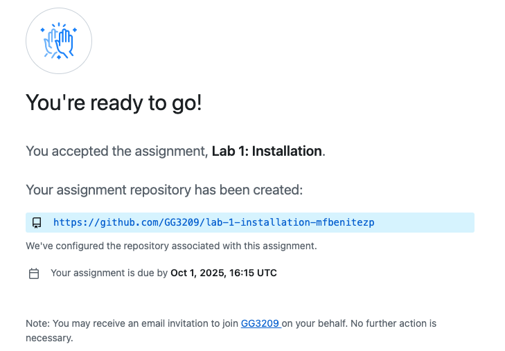
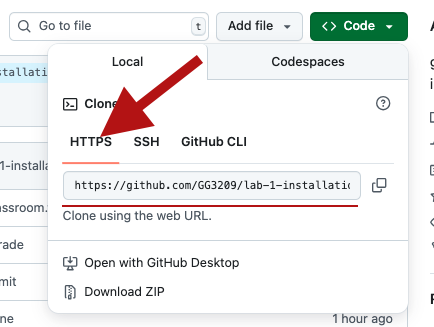
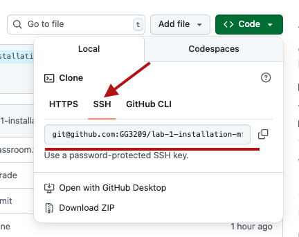

Lab 1: Installation Assignment
This is your first lab assignment and it correspond to the Lab No 1 in this part of the course. The idea is that we check that everything was installed correctly and you can create your first Jupyter notebook. There are several key steps so read carefully and follow the instructions.
This Lab Assignment will include a GitHub Classroom where you will automatically assigned a repository where you need to upload the outcomes of this assignment. This is an individual assignment and each student will have to generate their repository, and then push the requested files. The assignment will be automatically graded and I will review those grades to provide tufter feedback in Moodle.
Estimated time: 30-45 minutes
Step 1: Check Your Installation
1.1 Open Your Terminal/Command Prompt
- Windows: Search for “Anaconda Prompt” or “Command Prompt”
- Mac: Open “Terminal”
- Linux: Open your terminal application
1.2 Test These Commands
Type all these commands one after another, then take ONE screenshot of all the results:
# Check that conda is installed
conda --version
# To see your environments (you should see gg3209 in the list)
conda env list
# Activate your environment
conda activate gg3209
# Check Python is working
python --versionScreenshot 1: Take a full screen screenshot showing:
Your desktop/taskbar with date and time visible
The terminal window with all command results
Save this as
screenshot_1_installation_check.png
Make sure you name this screenshot exactly as is described. There are automatic tests then will use this name.
💡 Tip: Make sure your computer’s date/time is visible in the screenshot (usually in the taskbar/menu bar)
Step 2: Create Your First Jupyter Notebook
2.1 Start Jupyter
In your terminal (with gg3209 environment activated), type:
jupyter labThis should open a web browser with Jupyter. Take a full screen screenshot showing the Jupyter homepage with your desktop/taskbar (including date/time) visible.
Screenshot 2: Save this as screenshot_2_jupyter_home.png
Make sure you name this screenshot exactly as is described. There are automatic tests then will use this name.
2.2 Create a New Notebook
- Click “New” → “Python 3” to create a new notebook
- Save it as
my_first_notebook.ipynb(File → Save As)
Make sure you name this notebook exactly as is described. There are automatic tests then will use this name.
2.3 Add Content to Your Notebook
Cell 1 - Add the first Cell and change it to “Markdown” (dropdown menu), then type:
# My First GG3209 Notebook
**StudentCode:** [Write your Student Code]
**Date:** [date when you are working on this]
**Course:** GG3209 - Part 2Cell 2 - Add a new cell (click + button), keep it as “Code”, and type:
import datetime
import platform
import os
print("=" * 50)
print("INSTALLATION VERIFICATION")
print("=" * 50)
print(f"Date and Time: {datetime.datetime.now()}")
print(f"Student working on: {platform.system()} {platform.release()}")
print(f"Computer name: {platform.node()}")
print(f"Python location: {os.path.dirname(os.__file__)}")
print("=" * 50)
print("Hello, GG3209!")
print("Testing my Python installation...")
import pandas as pd
import numpy as np
print(f" Pandas version: {pd.__version__}")
print(f" NumPy version: {np.__version__}")
print("[✓] Basic libraries are working!")Cell 3 - Add another code cell:
import matplotlib.pyplot as plt
# Create a simple plot
x = [1, 2, 3, 4, 5]
y = [2, 4, 1, 5, 3]
plt.figure(figsize=(8, 5))
plt.plot(x, y, 'bo-', linewidth=2, markersize=8)
plt.title("My First Plot!", fontsize=16)
plt.xlabel("X values")
plt.ylabel("Y values")
plt.grid(True, alpha=0.3)
plt.show()
print("[✓] Plotting is working!")Cell 4 - Add another code cell:
try:
import geopandas as gpd
print(f"[✓]GeoPandas version: {gpd.__version__}")
print("[✓]Spatial data tools are ready!")
except ImportError:
print("[✕] GeoPandas not found - please check your installation")
try:
import folium
print(f" [✓]Folium version: {folium.__version__}")
print(" [✓]Interactive maps are ready!")
except ImportError:
print(" [✕] Folium not found - please check your installation")2.4 Run Your Notebook
- Click on each cell and press Shift + Enter to run it
- Make sure all cells run without errors
- Take a full screen screenshot of your completed notebook showing your desktop/taskbar with date and time Screenshot 3: Save this as
screenshot_3_notebook_complete.png
Step 3: Export as PDF (Important!)
This is a crucial step - It is important you can export your work as PDF.
- With the Jupyter Lab open and your
my_first_notebook.ipynbalready complete. - Go to File → Save and Export Notebook As → Webpdf
- If that doesn’t work, try File → Save and Export Notebook As → PDF
- Save and Export Notebook As → HTML and then using your browser’s print function to create a PDF file.
🚨 Important: You MUST submit a PDF version.
- Close Jupyter Lab. In the terminal press
Control-Ctwice to stop it.
Step 4: Get Your GitHub Repository
4.1 Accept the Assignment (Using GitHub Classroom)
Click on the assignment link: [Assignment Link]
This will automatically create a repository for you named
lab-1-installation-student_GH_accountGitHub will create your personal copy - wait for it to finish setting up

4.2 Clone and Work with Your Repository
Click the green “Code” button and copy the repository URL.
If you have windows machine make sure you copy the HTTPS link,

but if you have MacOS machine, copy the SSH link.

Open terminal/command prompt and navigate to where you want to save your work (e.g Documents)
Run this command including the link you have just copied:
git clone [paste-your-repository-url]It ill take some seconds to clone locally the repository. Navigate into your repository using
cdand the folder that has been created. (e.gcd lab-1-installation-mfbenitezp)
4.3 Add Your Files
Copy all the screenshots you have generated, your jupyter notebook (the file with extension .ipynb) and the PDF file into your repository folder:
- my_first_notebook.ipynb
- my_first_notebook.pdf
- All your screenshots
Step 5: Submit Your Work
What to Check Before Submitting
Your Local repository should have:
- [ ] my_first_notebook.ipynb your Jupyter notebook
- [ ] my_first_notebook.pdf a PDF version of your notebook
- [ ] 3 screenshots showing your work (all full screen with date/time visible)
In the same terminal where you have launched Jupyter or in a new terminal (but make sure you are located in the folder of the repository you have cloned).
Run the following commands to submit your work for this part of the Lab No1 and the requirements of this assignment.
# Add all files
git add .
# Commit with a message
git commit -m "Ready to Grade"
# Push to GitHub
git pushAutomatic Validation: Once you push, GitHub will automatically check:
All required files are present
Notebook runs without errors (it will make sure your Notebook execute correctly and in your machine)
PDF export was successful
Screenshots show proper installation
You’ll see a green checkmark ✅ or red X ❌ next to your commit showing if validation passed!
Getting Help
If Something Doesn’t Work:
- Don’t panic! This is normal when learning Python or Git
- Take a screenshot of any error messages.
- Ask for help using the Teams Channel or make an appointment during my office hours.
- Include the error screenshot in your repository
Common Issues:
- Conda not found: Make sure you installed Miniconda correctly
- Environment not found: Double-check the environment name is
gg3209 - PDF export fails: Try the browser print method, or just submit screenshots
- Libraries missing: Make sure you’re in the right environment (
conda activate gg3209) - Check and Review the troubleshooting guideline.
Well Done
You’ve completed your first part of the lab 1, now move to the next assignment. For now you can:
- Use conda environments
- Create and run Jupyter notebooks
- Export notebooks as PDF
- Upload files to GitHub
This guide was created for the GG3209 Spatial Analysis with GIS students at SGSD University of St Andrews. For questions or suggestions, please create an issue in this book repository. 2025